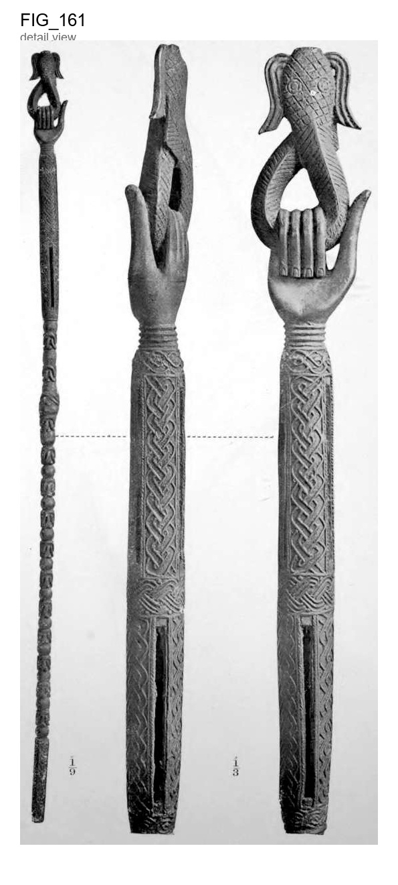

Original scan

Bronze staff of office, 4 feet 11 inches in length, weighing 14 lbs
Bronze staff of office, 4 feet 11 inches in length, weighing 14 lbs. : it has two elongated crotals in the upper end, with long slits for the emission Between the slits are vertical of the sound, enclosing loose rods of iron. 51 bands of guilloche pattern with raised edges, similar to those represented on the stem and toji of the mancala board, Fig. 116, Plate XX, and a On the top is horizontal band of guilloche pattern with joellets in relief. an upright human hand, holding a curled mud-fish. The middle of the staff is ornamented by curious nondescript figures alternating with balls, and the lower end has an oblong butt ornamented on the four sides with The staff has guilloche pattern, like that of the crotals on the upper end. been broken in the middle and mended by recasting in a clumsy way, the metal of the part introduced being thicker than the staff itself H 2 52 Antique Works of Art from Benin.